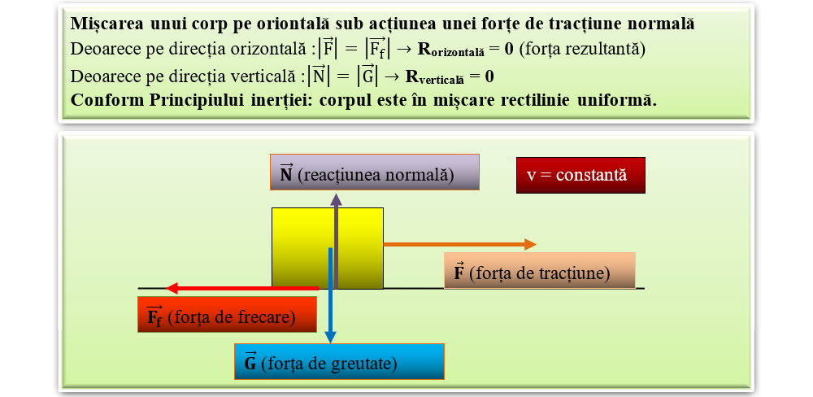

Lecția 12 – Mișcarea unui corp sub acțiunea mai multor forțe
În multe situații, asupra unui corp acționează simultan mai multe forțe. Mișcarea corpului depinde de forța rezultantă.
Cărucior tras pe o suprafață
Un corp tras pe orizontală poate fi acționat simultan de:
- greutatea \( \vec{G} \), vertical în jos;
- normala \( \vec{N} \), vertical în sus;
- forța de tracțiune \( \vec{F} \), în sensul mișcării;
- forța de frecare \( \vec{F}_f \), opusă mișcării.
Forțe pe orizontală și verticală

Forța rezultantă
Forța rezultantă este forța care are același efect mecanic ca toate forțele care acționează simultan asupra corpului.
Dacă \( \vec{F}_R = \vec{0} \), forțele sunt în echilibru.
Dacă \( \vec{F}_R \neq \vec{0} \), corpul își modifică starea de mișcare.
Ce poate face corpul?
Un corp acționat de mai multe forțe poate avea una dintre următoarele stări mecanice:
| Stare mecanică | Descriere |
|---|---|
| Repaus | corpul rămâne nemișcat față de reper |
| Mișcare uniformă | viteza rămâne constantă |
| Mișcare accelerată | viteza crește în timp |
| Mișcare încetinită | viteza scade în timp |
Forța rezultantă este zero
Pe verticală, greutatea și normala se pot compensa:
Pe orizontală, forța de tracțiune și frecarea se pot compensa:
Forța rezultantă nu este zero
Dacă forța de tracțiune este mai mare decât forța de frecare, apare o rezultantă în sensul mișcării.
Conform principiului fundamental al mecanicii:
Forțe reprezentate pe corp

Observarea mișcării
Poți studia mișcarea unui corp folosind o scândură, un corp paralelipipedic, un resort elastic și un dinamometru.
- Trage corpul lent cu dinamometrul.
- Observă când corpul pornește.
- Compară forța de tracțiune cu forța de frecare.
- Notează dacă mișcarea este uniformă, accelerată sau încetinită.
Calculăm rezultanta
Un corp de masă \(m = 3\,kg\) este tras cu forța \(F = 10\,N\). Forța de frecare este \(F_f = 4\,N\).
Forța rezultantă pe orizontală este:
Accelerația corpului este:
Alege varianta corectă
1. Dacă rezultanta forțelor este zero, corpul poate:
2. Forța de frecare are, de obicei, sens:
Încă o aplicație
3. Un corp este tras cu \(12\,N\), iar frecarea este \(5\,N\). Rezultanta este: